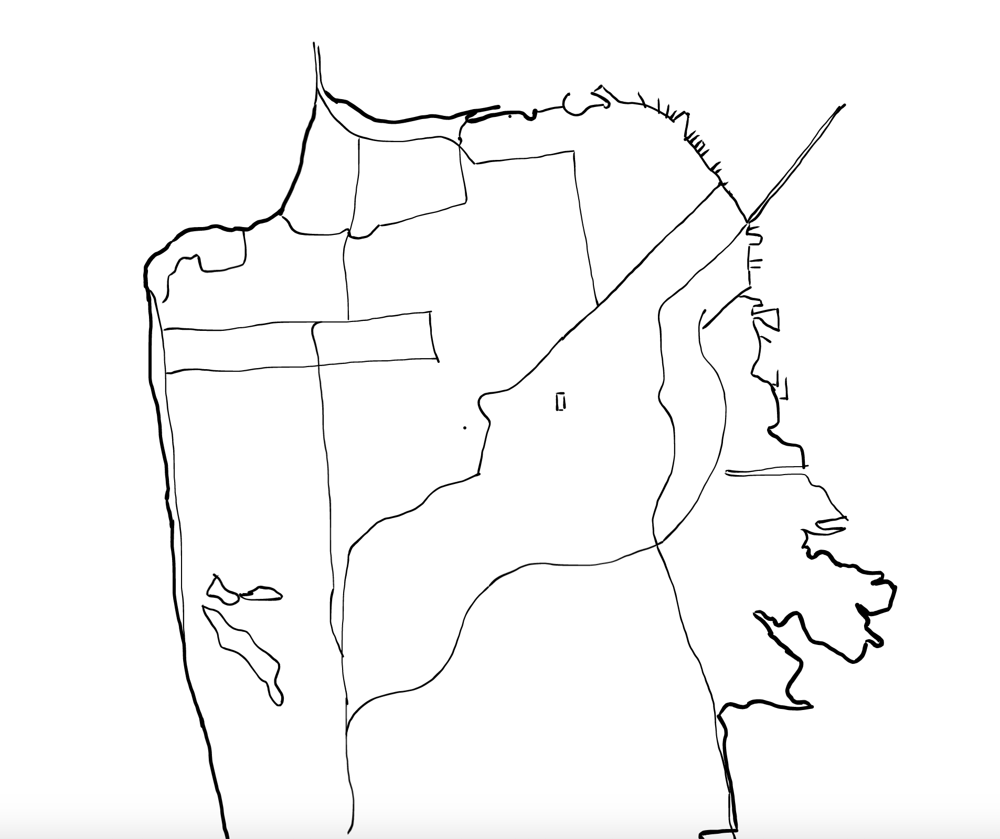

<!DOCTYPE html>
<html>
<head>
    <meta charset='utf-8' />
    <title>Display a popup on click</title>
    <meta name='viewport' content='initial-scale=1,maximum-scale=1,user-scalable=no' />
    <script src='https://api.tiles.mapbox.com/mapbox-gl-js/v1.5.0/mapbox-gl.js'></script>
    <link href='https://api.tiles.mapbox.com/mapbox-gl-js/v1.5.0/mapbox-gl.css' rel='stylesheet' />
    <style>
        body { margin:0; padding:0; }
        #map { position:absolute; top:25%; bottom:0; width:50%; height:50%; }
    </style>
</head>
<body>

<style>
    .mapboxgl-popup {
        max-width: 400px;
        font: 12px/20px 'Helvetica Neue', Arial, Helvetica, sans-serif;
    }
</style>
<div id='map'></div>
<script>

var map = new mapboxgl.Map({
    container: 'map',
    style: 'mapbox://styles/mapbox/satellite-v9',
    center: [-122.44, 37.76],
    minZoom: 9.5,
    maxZoom: 10.5,
    zoom: 10
});

map.on('load', function () {
    // Add a layer showing the places.
    map.addLayer({
        "id": "places",
        "type": "symbol",
        "source": {
            "type": "geojson",
            "data": {
                "type": "FeatureCollection",
                "features": [{
                    "type": "Feature",
                    "properties": {
                        "description": "<strong>Fort Mason</strong>",
                        "icon": "theatre"
                    },
                    "geometry": {
                        "type": "Point",
                        "coordinates": [-122.42, 37.81]
                    }
                }, {
                    "type": "Feature",
                    "properties": {
                        "description": "<strong>Crissy Beach</strong><p>Beautiful view of the Golden Gate</p>",
                        "icon": "theatre"
                    },
                    "geometry": {
                        "type": "Point",
                        "coordinates": [-122.453241, 37.806264]
                    }
                }, {
                    "type": "Feature",
                    "properties": {
                        "description": "<strong>Bay Bridge</strong><p>Night view</p>",
                        "icon": "bar"
                    },
                    "geometry": {
                        "type": "Point",
                        "coordinates": [-122.396918, 37.7987]
                    }
                }]
            }
        },
        "layout": {
            "icon-image": "{icon}-15",
            "icon-allow-overlap": true
        }
    });

    // When a click event occurs on a feature in the places layer, open a popup at the
    // location of the feature, with description HTML from its properties.
    map.on('click', 'places', function (e) {
        var coordinates = e.features[0].geometry.coordinates.slice();
        var description = e.features[0].properties.description;

        // Ensure that if the map is zoomed out such that multiple
        // copies of the feature are visible, the popup appears
        // over the copy being pointed to.
        while (Math.abs(e.lngLat.lng - coordinates[0]) > 180) {
            coordinates[0] += e.lngLat.lng > coordinates[0] ? 360 : -360;
        }

        new mapboxgl.Popup()
            .setLngLat(coordinates)
            .setHTML(description)
            .addTo(map);
    });

    // Change the cursor to a pointer when the mouse is over the places layer.
    map.on('mouseenter', 'places', function () {
        map.getCanvas().style.cursor = 'pointer';
    });

    // Change it back to a pointer when it leaves.
    map.on('mouseleave', 'places', function () {
        map.getCanvas().style.cursor = '';
    });
});
</script>

</body>
</html>
